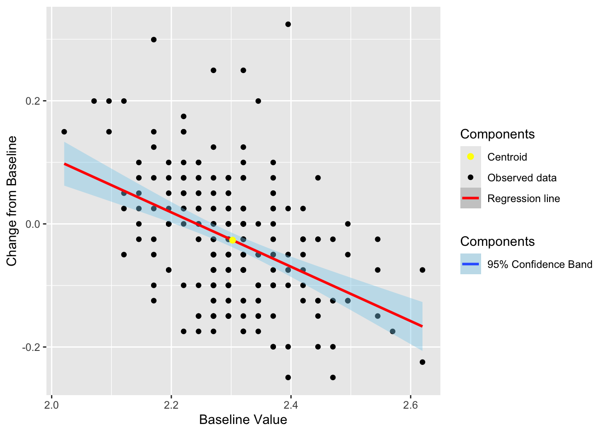
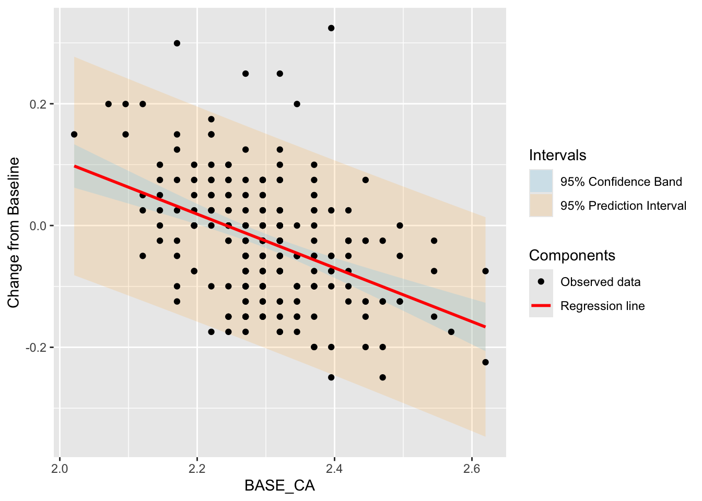
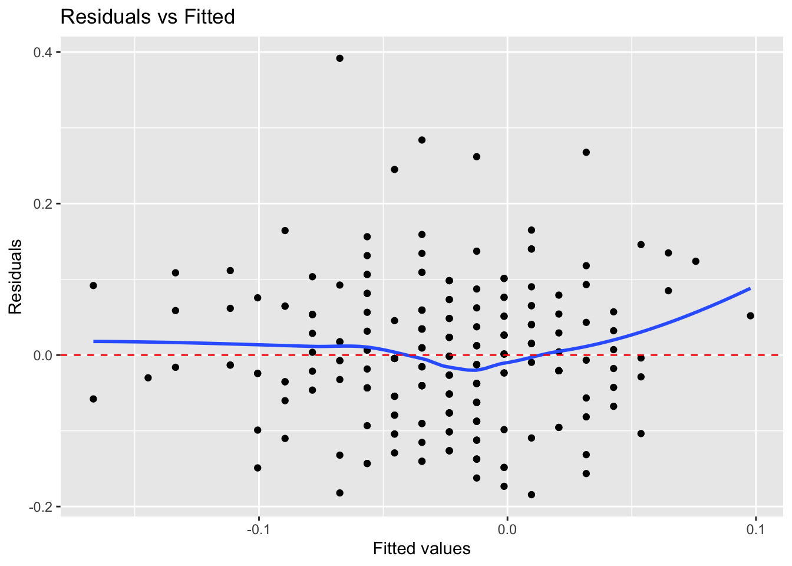
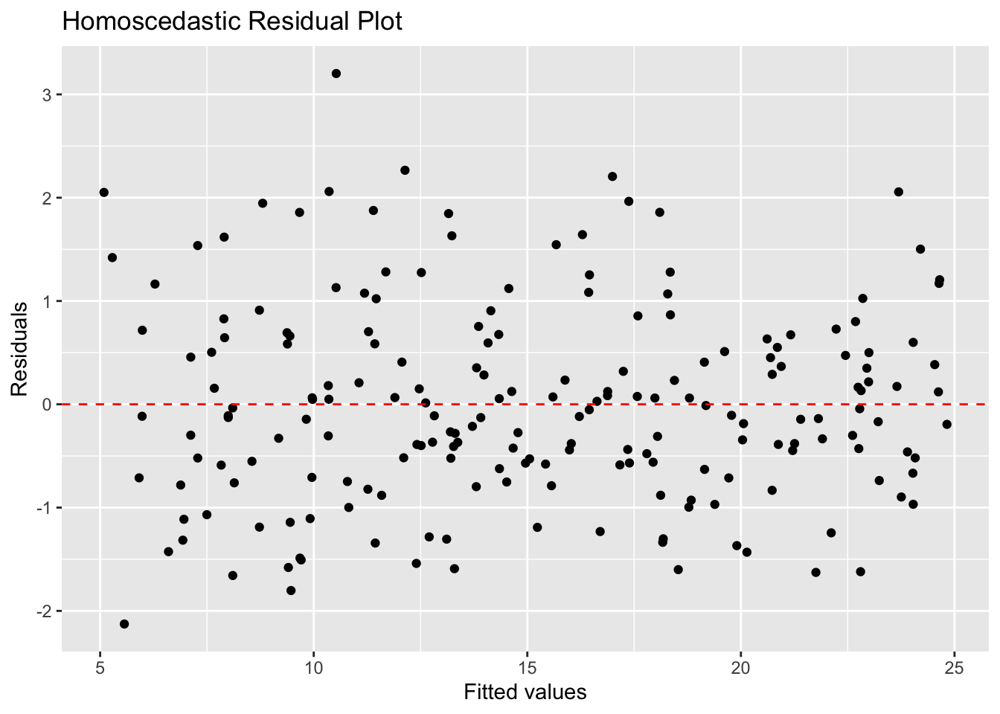
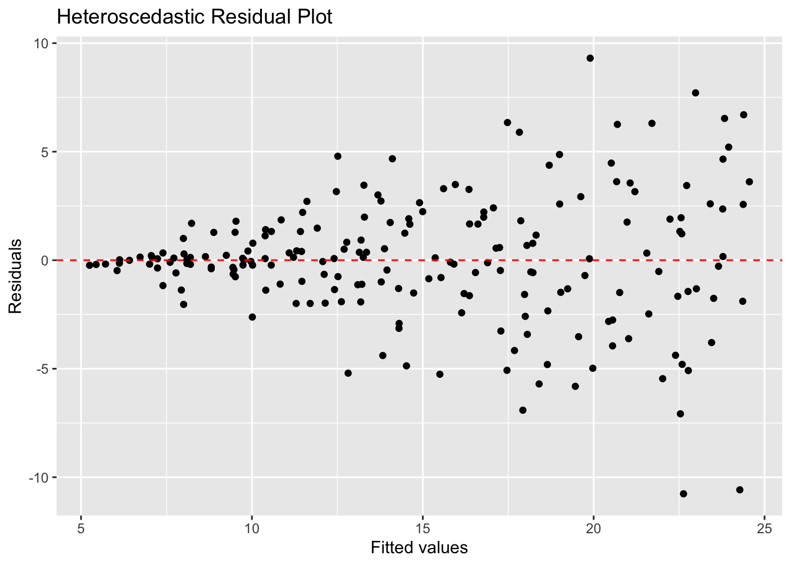
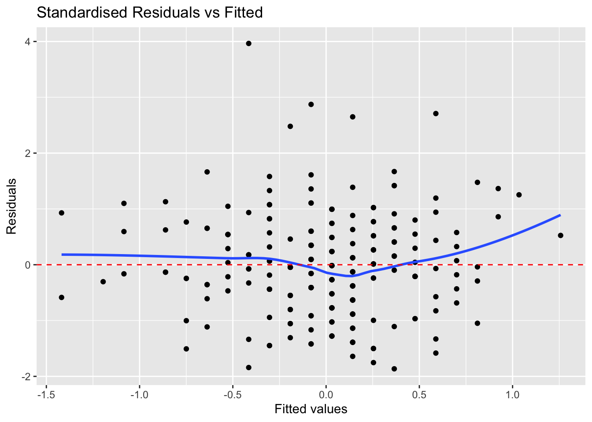
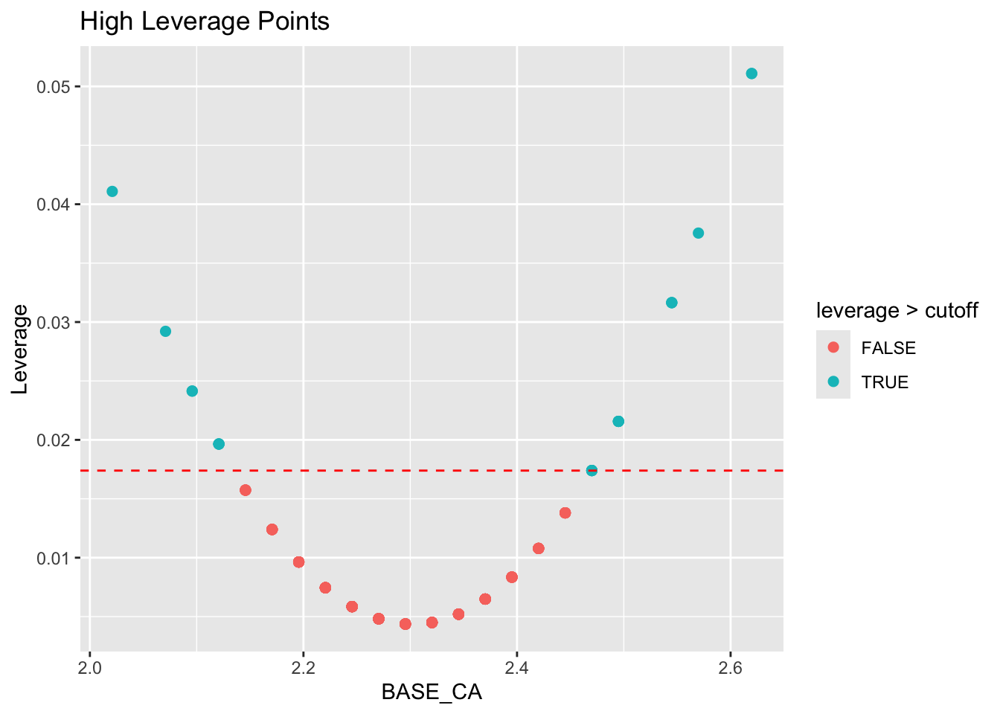

Chapter 3 Simple Linear Regression
## 📄 Reading package pharmaverseadam ...## 📦 Lazy-loaded 30 datasets from package 'pharmaverseadam'.
## Examples: adab, adae, adapet_neuro, ...
## Load a dataset with:
## data <- result[['dataset_name']]()Simple linear regression is a statistical method that allows us to summarize and study relationships between two continuous (quantitative) variables. One variable, denoted \(x\), is regarded as the predictor, explanatory, or independent variable. The other variable, denoted \(y\), is regarded as the response, outcome, or dependent variable. The goal of simple linear regression is to find the best-fitting straight line through the points on a scatter plot of \(x\) and \(y\). This line is called the regression line.
\[ y = \beta_0 + \beta_1 x + \varepsilon \] where:
- \(\beta_0\) intercet population parameter;
- \(\beta_1\) slope population parameter;
- \(\varepsilon\) error term.
The mean or expected value of \(y\) for a given value of \(x\). \[ E(y|x) = \beta_0 + \beta_1 x \]
Note \(E(\varepsilon) = 0\) so the regression line captures the average relationship correctly.
We almost never have a population parameter to work with, so we need to estimate the parameters \(b_0\) and \(b_1\) using sample data.
\[ \hat{y} = b_0 + b_1 x \]
3.1 Before regression: Exploratory Data Analysis
Step 1 Plot the data to see if there is a relationship between the two variables.

Step 2 Look for a visual relationship between the two variables. If there is a relationship, we can fit a line to the data.

Step 3 Calculate correlation between the two variables to see if there is a linear relationship between them. For more information see 2.12.
## [1] -0.4335349Step 4 Calculate the centroid \(\bar{x}\), \(\bar{y}\)
Step 5 Calculate the slope and intercept of the regression line using the formulas below.
3.2 Least squares
We are looking for the line that best fits the data points. \[ \hat{y} = b_0 + b_1 x \]
In order to do that we are using the method of least squares, which minimizes the sum of the squared residuals (the vertical distances between the observed values and the predicted values).
\[ min \sum_{i=1}^{n} (y_i - \hat{y_i})^2 \]
where:
- \(y_i\) observer values;
- \(\hat{y_i} = b_0 + b_1 x_i\) estimated(predicted) values.
or using residuals:
\[ RSS = \sum_{i=1}^{n} e_i^2 \]
where \(e_i = y_i - \hat{y_i}\) the \(i\)th residual this is the difference between the \(i\)th observed response value and the \(i\)th response value.
equivalently
\[ RSS = \sum_{i=1}^{n} (y_i - b_0 - b_1 x_i)^2 \]
The least squares approach chooses \(b_0\) and \(b_1\) to minimize the \(RSS\). Using some calculus:
\[ \frac{\partial RSS}{\partial b_0} = -2 \sum_{i=1}^{n} (y_i - b_0 - b_1 x_i) = 0 \]
\[ \frac{\partial RSS}{\partial b_1} = -2 \sum_{i=1}^{n} x_i (y_i - b_0 - b_1 x_i) = 0 \]
Simplify:
\[ \sum y_i = n b_0 + b_1 \sum x_i \tag{1} \]
\[ \sum x_i y_i = b_0 \sum x_i + b_1 \sum x_i^2 \tag{2} \]
from (1):
\[ b_0 = \frac{\sum y_i - b_1 \sum x_i}{n} \]
Substitute \(b_0\) into (2):
\[ \sum x_i y_i = \left( \frac{\sum y_i - b_1 \sum x_i}{n} \right) \sum x_i + b_1 \sum x_i^2 \]
Expand:
\[ \sum x_i y_i = \frac{\sum x_i \sum y_i}{n} - b_1 \frac{(\sum x_i)^2}{n} + b_1 \sum x_i^2 \]
Rearrange terms:
\[ \sum x_i y_i - \frac{\sum x_i \sum y_i}{n} = b_1 \left( \sum x_i^2 - \frac{(\sum x_i)^2}{n} \right) \]
Solve for \(b_1\):
\[ b_1 = \frac{ \sum x_i y_i - \frac{\sum x_i \sum y_i}{n} }{ \sum x_i^2 - \frac{(\sum x_i)^2}{n}} \]
Equivalent centered form:
\[ b_1 = \frac{\sum_{i=1}^{n}(x_i - \bar{x})(y_i - \bar{y})}{\sum_{i=1}^{n}(x_i - \bar{x})^2} \tag{3} \]
and from (1)
\[ b_0 = \bar{y} - b_1 \bar{x} \tag{4} \]
Cozy correlation:
\[ b_1 = r \frac{s_y}{s_x} \]
where:
- \(s_x\) standard deviation of \(x\);
- \(s_y\) standard deviation of \(y\);
3.3 Regression line
\[ \hat{y} = b_0 + b_1 x \]
Find \(b_0\) and \(b_1\) using (3) and (4):
\[b_0 = 0.99\]
\[b_1 = -0.44\]
\[\hat{y_i} = 0.99 + -0.44 x_i\]

3.4 Understanding model error
In simple linear regression, the total variation in the response variable is decomposed into three components:
3.4.1 Total Sum of Squares (SST)
Measures the total variability in the observed data:
\[ SST = \sum_{i=1}^{n}(y_i - \bar{y})^2 \]
\[SST = 2.24\]
3.4.2 Regression Sum of Squares (SSR)
Measures the explained variation by the regression model:
\[ SSR = \sum_{i=1}^{n}(\hat{y_i} - \bar{y})^2 \]
\[SSR = 0.42\]
3.4.3 Error Sum of Squares (SSE)
Measures the unexplained variation (residual error):
\[ SSE = \sum_{i=1}^{n}(y_i - \hat{y_i})^2 \]
\[SSE = 1.82\]
3.4.5 Coefficient of Determination (\(R^2\))
Another way to measure the contribution of \(x\) in predicting \(y\) is to consider how much the errors of prediction can be reduced by using the information provided by \(x\).
\[ R^2 = \frac{SSR}{SST} = \frac{SST - SSE}{SST} = 1 - \frac{SSE}{SST} = 1 - \frac{\sum (y_i - \hat{y_i})^2}{\sum (y_i - \bar{y})^2} \]
\[R^2 = 0.188\]
[1] 0.1879525
Practical interpratation of the Coefficient of Determination:
About $ 100(R^2) % $ for the total sum of squeres of deviations of the sample \(y\) values about their mean \(\bar{y}\) can be explained by using \(x\) to predict
\(y\) in the straight line regression model. The remaining \(100(1-R^2) %\) of the total sum of squares is due to the variability in \(y\) that cannot be explained by the linear relationship with \(x\).
3.4.6 Adjusted R-squared
Adjusted \(R^2\) accounts for the number of predictors in the model and penalizes unnecessary complexity.
\[ R^2_{adj} = 1 - \frac{(1 - R^2)(n - 1)}{n - p - 1} \]
where:
- \(p\) = number of predictors. Sometimes instead of \(n - p - 1\) you may see \(df\)
- \(df = n - p - 1\) is degrees of freedom
p <- 1 # number of predictors
df <- n - p - 1
R2_adj <- 1 - ((1 - SSR/SST) * (n - 1)) / (n - p - 1)
sprintf("$$R^2_{adj} = %.3f$$", round(R2_adj, 3)) %>% cat()\[R^2_{adj} = 0.184\]
[1] 0.1843909
3.5 Standardized Variables
Let us standardize the variables \(x\) and \(y\) so that they each have mean \(0\) and standard deviation \(1\).
The standardized versions are:
\[ z_{x,i} = \frac{x_i - \bar{x}}{s_x} \]
and
\[ z_{y,i} = \frac{y_i - \bar{y}}{s_y} \]
where:
- \(\bar{x}\) and \(\bar{y}\) are the sample means
- \(s_x\) and \(s_y\) are the sample standard deviations
After standardization:
\[ E(z_x) = 0 \qquad E(z_y) = 0 \]
and
\[ SD(z_x) = 1 \qquad SD(z_y) = 1 \]

3.5.1 Correlation
Lets check the correlation between the standardized variables:
cor(adlb_wide$BASE_CA, adlb_wide$CHG_CA) %>% round(3) %>%
sprintf("Original correlation $$r = %.3f$$", .) %>% cat()Original correlation \[r = -0.434\]
cor(adlb_std$z_BASE_CA, adlb_std$z_CHG_CA) %>% round(3) %>%
sprintf("Correlation of standardized variables $$r = %.3f$$", .) %>% cat()Correlation of standardized variables \[r = -0.434\]
We can see that correlatio between the original variables and the standardized variables is the same.
3.5.2 Standardized Regression
Consider the simple linear regression model after standardizing both variables the standardized regression model becomes:
\[ z_{y,i} = b_1^{*} z_{x,i} + \varepsilon_i \]
where:
\[ b_1^{*} = r_{xy} \]
is the sample correlation between \(x\) and \(y\). Since standardized variables have mean \(0\):
\[ b_0^{*} = 0 \]
Thus, the standardized regression line passes through the origin.

Using standardized scores can help:
- interprete variables with different scales;
- helpful to see general patterns in the data;
- help to see which variable offer more to keep and which to drop;
- determine whiich variable in multiple regression account for more variance in the response variable.
3.6 Statistical sagnificance
- Overal \(F\)-test or \(t\) test is sagnificant;
- Can we reject \(H_0\) that the slope \(b_1\) is zero;
- Does confidence inteval for \(b_1\) contain zero.
3.6.1 Standart error of estimate
\[ MSE = \frac{SSE}{n-2} \]
where:
- \(SSE\) is the sum of squared errors
- \(MSE\) is the mean squared error
\[MSE = 0.008\]
[1] 0.007966412
3.6.2 Confidence interval for slope
For the simple linear regression model
the \((1 - \alpha)100\%\) confidence interval for the slope \(b_1\) is
\[ b_1 \pm t_{\alpha/2,\,df} \cdot SE(b_1) \]
where:
- \(b_1\) is the estimated slope
- \(SE(b_1)\) is the standard error of the slope estimate
- \(t_{\alpha/2,\,df}\) is the critical value from the \(t\) distribution
- \(\alpha\) usually is set to \(0.05\) for a \(95\%\) confidence interval
- \(df\) are the degrees of freedom
The standard error of the slope is
\[ SE(b_1) = \sqrt{ \frac{MSE} {\sum (x_i - \bar{x})^2} } \]
SE_b1 <- sqrt(MSE/((n-1)*var(x, na.rm = TRUE)))
sprintf("$$SE(b_1) = %.5f$$", round(SE_b1, 6)) %>% cat()\[SE(b_1) = 0.06080\]
[1] 0.06079744
Confidence interval for the slope:
alpha <- 0.05
t_crit <- qt(1 - alpha/2, df)
lower <- b_1 - t_crit * SE_b1
upper <- b_1 + t_crit * SE_b1
cat(sprintf("$$[%.3f, %.3f]$$", lower, upper))\[[-0.561, -0.322]\]
2.5 % 97.5 % -0.5614546 -0.3218613
The confidence interval does not contain zero.
3.6.3 Test statistic
3.6.3.1 t-statistic (for a coefficient)
For two-tailed testing \(H_0: b_1 = 0\):
\[ t = \frac{b_1}{SE(b_1)} \]
where:
- \(b_1\) is the estimated coefficient
- \(SE(b_1)\) is its standard error
at significance level \(\alpha\), we reject \(H_0\) if:
\[ |t| > t_{\alpha/2,\, df} \]
\[ |7.264| > 1.970\]
t_val <- summary(fit)$coefficients[2, "t value"]
p_val <- summary(fit)$coefficients[2, "Pr(>|t|)"]
cat(sprintf("$$t = %.3f, \\quad p = %.6f$$", t_val, p_val))\[t = -7.264, \quad p = 0.000000\]
The confidence interval does not contain zero and \(|t| > t_{\alpha/2,\, df}\) , so we can reject the null hypothesis that the slope is zero and conclude that there is a statistically significant linear relationship between \(x\) and \(y\).
3.6.3.2 F-statistic (overall regression significance)
For two-tailed testing: \[ H_0: b_1 = 0 \]
\[ F = \frac{MSR}{MSE} \]
where:
- \(MSR = \frac{SSR}{p}\) (Mean Square Regression)
- \(MSE = \frac{SSE}{n-p-1}\) (Mean Square Error)
Equivalent form:
\[ F = \frac{SSR / p}{SSE / (n - p - 1)} \]
at significance level \(\alpha\), we reject \(H_0\) if:
\[ |F| > F_{\alpha,\, p,\, df} \]
MSR <- SSR/p
F <- MSR/MSE
F_crit <- qf(1 - alpha/2, p, df)
cat(sprintf("$$ |%.3f| > %.3f$$", abs(F), F_crit))\[ |52.772| > 5.091\]
value 52.77175
The confidence interval does not contain zero and \(|F| > F_{\alpha,\, p,\, df}\) , so we can reject the null hypothesis that the slope is zero and conclude that there is a statistically significant linear relationship between \(x\) and \(y\).
3.7 Bands
3.7.1 Confidence band
NOTE: Regression is not deterministic.
We can not generate an exact value but we can generate mean and confidence interval for the mean response at a given predictor value \(x_0\). For a given predictor value \(x_0\), the confidence interval for the mean response is
\[ \hat{y}(x_0) \pm t_{\alpha/2,\,n-2} \sqrt{ MSE \left( \frac{1}{n} + \frac{(x_0 - \bar{x})^2} {\sum (x_i - \bar{x})^2} \right) } \]
where:
- \(\hat{y}(x_0)\) is the fitted mean response at \(x_0\)
- \(MSE = \dfrac{SSE}{n-2}\)
- \(t_{\alpha/2,\,df}\) is the critical \(t\) value
- \(n\) is the number of observations
From the formula we can see that the most precice estimate of the population mean is at the centroid of the data (\(x_0 = \bar{x}\)). After the \(\bar{x}\) the interval become vider.
xbar <- mean(x, na.rm = TRUE)
x0 <- sample(x, 1) # take a random value
y_x0 <- predict( fit, newdata = data.frame( BASE_CA = x0)) # nolint
SE_x0 <- sqrt(MSE * ((1 / n) + ((x0 - xbar)^2) / sum((x - xbar)^2)))
lower <- y_x0 - t_crit * SE_x0
upper <- y_x0 + t_crit * SE_x0
cat(sprintf("$$[%.3f, %.3f]$$", lower, upper))\[[0.021, 0.065]\]
fit lwr upr1 0.04271376 0.02065443 0.06477309
adlb_wide %>%
ggplot(aes(BASE_CA, CHG_CA)) +
geom_point(aes(color = "Observed data")) +
geom_smooth(
method = "lm",
se = TRUE,
aes(color = "Regression line",
fill = "95% Confidence Band")
) +
geom_point(
data = adlb_wide %>% summarise(
BASE_CA = mean(BASE_CA, na.rm = TRUE),
CHG_CA = mean(CHG_CA, na.rm = TRUE)
),
aes(BASE_CA, CHG_CA, color = "Centroid"),
size = 2
) +
scale_color_manual(
name = "Components",
values = c(
"Observed data" = "black",
"Regression line" = "red",
"Centroid" = "yellow"
)
) +
scale_fill_manual(
name = "Components",
values = c(
"95% Confidence Band" = "skyblue"
)
)## `geom_smooth()` using formula = 'y ~ x'
3.7.2 Prediction band
For a given predictor value \(x_0\), the prediction interval for a new observation is
\[ \hat{y}(x_0) \pm t_{\alpha/2,\,df} \sqrt{ MSE \left( 1 + \frac{1}{n} + \frac{(x_0 - \bar{x})^2} {\sum (x_i - \bar{x})^2} \right) } \]
Important DifferenceImportant Difference Prediction bands are wider than confidence bands because they include:
- uncertainty in estimating the mean response
- variability of individual observations
PSE_x0 <- sqrt(MSE + SE_x0^2)
lower <- y_x0 - t_crit * PSE_x0
upper <- y_x0 + t_crit * PSE_x0
cat(sprintf("$$[%.3f, %.3f]$$", lower, upper))\[[-0.135, 0.220]\]
fit lwr upr1 0.04271376 -0.1345339 0.2199615
grid <- data.frame(
BASE_CA = seq(
min(adlb_wide$BASE_CA, na.rm = TRUE),
max(adlb_wide$BASE_CA, na.rm = TRUE),
length.out = 100
)
)
# confidence + prediction
ci <- predict(fit, newdata = grid, interval = "confidence")
pi <- predict(fit, newdata = grid, interval = "prediction")
grid_ci <- cbind(grid, ci)
grid_pi <- cbind(grid, pi)
ggplot() +
# prediction band (must come first)
geom_ribbon(
data = grid_pi,
aes(x = BASE_CA, ymin = lwr, ymax = upr, fill = "95% Prediction Interval"),
alpha = 0.15
) +
# confidence band
geom_ribbon(
data = grid_ci,
aes(x = BASE_CA, ymin = lwr, ymax = upr, fill = "95% Confidence Band"),
alpha = 0.25
) +
# raw data
geom_point(
data = adlb_wide,
aes(BASE_CA, CHG_CA, color = "Observed data")
) +
# regression line
geom_smooth(
data = adlb_wide,
aes(BASE_CA, CHG_CA, color = "Regression line"),
method = "lm",
se = FALSE
) +
scale_color_manual(
name = "Components",
values = c(
"Observed data" = "black",
"Regression line" = "red"
)
) +
scale_fill_manual(
name = "Intervals",
values = c(
"95% Confidence Band" = "skyblue",
"95% Prediction Interval" = "orange"
)
)## `geom_smooth()` using formula = 'y ~ x'
3.8 Residual analysis
Residual analysis is used to assess whether the assumptions of the regression model are reasonable. The variance left unexplained is due to the error term \(\varepsilon\) in the regression model.
The residual for observation \(i\) is
\[ e_i = y_i - \hat{y}_i \]
where:
- \(y_i\) is the observed response
- \(\hat{y_i}\) is the fitted value
ggplot(
data.frame(
fitted = fitted(fit),
residuals = residuals(fit)
),
aes(fitted, residuals)
) +
geom_point() +
geom_smooth(se = FALSE) +
geom_hline(yintercept = 0, linetype = "dashed", color = "red") +
labs(
title = "Residuals vs Fitted",
x = "Fitted values",
y = "Residuals"
) ## `geom_smooth()` using method = 'loess' and formula = 'y ~ x'
3.8.1 Homoscedasticity
Homoscedasticity means that the variance of the errors is constant:
\[ Var(\varepsilon_i) = \sigma^2 \]
for all observations.
A homoscedastic residual plot typically looks like a horizontal cloud of points.

3.8.2 Heteroscedasticity
Heteroscedasticity occurs when the variance of the errors changes with the fitted values or predictors.
In a residual plot:
- spread increases or decreases
- funnel or cone shapes may appear
- residual variability is not constant
Common patterns:
- widening spread
- narrowing spread
- curved structures

3.8.3 Desired Residual Plot
A good residual plot should show:
- random scatter around \(0\)
- no systematic structure
- approximately equal variance
- no strong outliers
3.8.4 Tests for residuals
3.8.4.1 Shapiro-Wilk Test
The Shapiro-Wilk test is used to assess whether residuals are normally distributed.
Hypotheses
\[ H_0:\ \text{Residuals are normally distributed} \]
\[ H_A:\ \text{Residuals are not normally distributed} \]
##
## Shapiro-Wilk normality test
##
## data: residuals(fit)
## W = 0.97196, p-value = 0.0001601Interpretation
Large p-value: residuals appear approximately normal
Small p-value: evidence against normality
3.8.4.2 Breusch-Pagan Test
The Breusch-Pagan test is used to detect heteroscedasticity.
Hypotheses
\[ H_0:\ \text{Constant variance (homoscedasticity)} \]
\[ H_A:\ \text{Non-constant variance (heteroscedasticity)} \]
##
## studentized Breusch-Pagan test
##
## data: fit
## BP = 0.0016016, df = 1, p-value = 0.9681Interpretation
Large p-value: constant variance is reasonable
Small p-value: evidence of heteroscedasticity
3.8.4.3 Durbin-Watson Test
The Durbin-Watson test is used to detect autocorrelation in residuals.
Hypotheses
\[ H_0:\ \text{No autocorrelation} \]
\[ H_A:\ \text{Autocorrelation exists} \]
##
## Durbin-Watson test
##
## data: fit
## DW = 2.1839, p-value = 0.9188
## alternative hypothesis: true autocorrelation is greater than 0Interpretation
Large p-value: residuals appear independent
Small p-value: evidence of autocorrelation
3.8.4.4 White Test
The White test is a general test for heteroscedasticity.
It allows variance to depend on: - predictors - squared predictors - interaction terms
Hypotheses
\[ H_0:\ \text{Homoscedasticity} \]
\[ H_A:\ \text{Heteroscedasticity} \]
##
## studentized Breusch-Pagan test
##
## data: fit
## BP = 0.080279, df = 2, p-value = 0.9607Interpretation
Large p-value: no evidence of heteroscedasticity
Small p-value: evidence of heteroscedasticity
3.8.4.5 NCV Test (Non-Constant Variance Test)
The NCV test evaluates whether residual variance changes with fitted values.
Hypotheses
\[ H_0:\ \text{Constant variance} \]
\[ H_A:\ \text{Non-constant variance} \]
## Non-constant Variance Score Test
## Variance formula: ~ fitted.values
## Chisquare = 0.002796637, Df = 1, p = 0.95782Interpretation
Large p-value: constant variance assumption is reasonable
Small p-value: evidence of changing variance
3.9 Outliers
- Always do scatter plot!!! Sometimes you will see points out of place, see 3.1
- Also chech other methods to identify outliers, see 2.7.
- An out of normal point may have a large residual.
NOTE: for standardized residuals usually \(<2\) if more possible otlier.
ggplot(
data.frame(
fitted = fitted(fit_z),
residuals = residuals(fit_z)
),
aes(fitted, residuals)
) +
geom_point() +
geom_smooth(se = FALSE) +
geom_hline(yintercept = 0, linetype = "dashed", color = "red") +
labs(
title = "Standardised Residuals vs Fitted",
x = "Fitted values",
y = "Residuals"
) ## `geom_smooth()` using method = 'loess' and formula = 'y ~ x'
3.9.1 Influential observations
Influential observations are data points that have a strong effect on the fitted regression model.
Outliers can influence the regression line and pull it toward them, potentially changing:
- slope estimates
- intercept estimates
- hypothesis tests
- predictions
Not all outliers are influential.
3.9.2 Leverage Points
Leverage measures how far a predictor value is from the mean of the predictor.
Observations with unusual predictor values may have high leverage and can strongly affect the regression line.
For simple linear regression, the leverage of observation \(i\) is
\[ h_i = \frac{1}{n} + \frac{(x_i - \bar{x})^2} {\sum_{j=1}^{n}(x_j - \bar{x})^2} \]
where:
- \(n\) is the sample size
- \(\bar{x}\) is the sample mean of \(x\)
- \(h_i\) is the leverage of observation \(i\)
Rule of Thumb
Rule of Thumb
Potential high leverage points are often identified using:
\[
h_i > \frac{2(p+1)}{n}
\]
or
\[ h_i > \frac{3(p+1)}{n} \]
where:
- \(p\) is the number of predictors
- \(n\) is the sample size
lev <- hatvalues(fit)
# Add leverage to dataset
adlb_wide$leverage <- lev
cutoff <- 2 * ((p+1) / nrow(adlb_wide))
# Show highest leverage points
ggplot(adlb_wide,
aes(BASE_CA, leverage,
color = leverage > cutoff)) +
geom_point(size = 2) +
geom_hline(
yintercept = cutoff,
color = "red",
linetype = "dashed"
) +
labs(
title = "High Leverage Points",
x = "BASE_CA",
y = "Leverage"
)